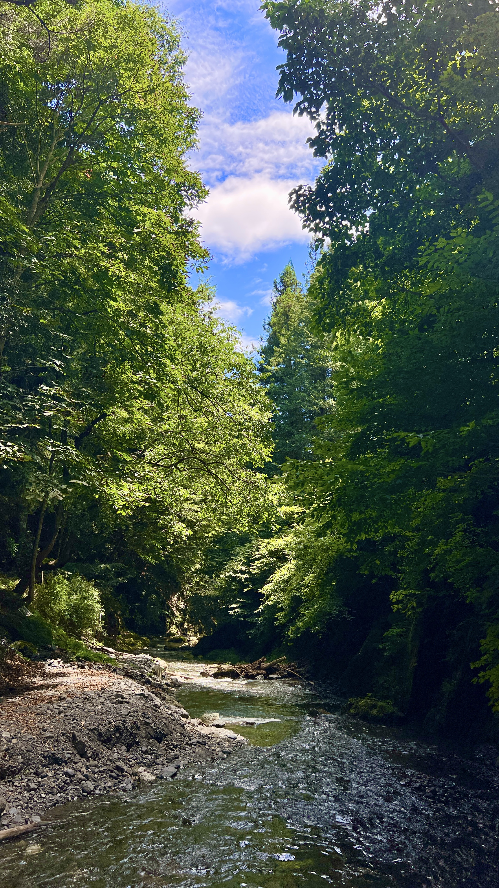

ひすい夏 / SUMMER
翡翠色
HISUI-IRO
#38B48B
涼しげな水辺を思わせる、青みを含んだ透明感のある緑色。
SEASON 02 / SUMMER
涼やかな水辺の緑と、光をたたえる深い青。夏の鮮やかな景色を切り取る二つの色です。
02
SUMMER COLLECTION

ひすい夏 / SUMMER
HISUI-IRO
#38B48B
涼しげな水辺を思わせる、青みを含んだ透明感のある緑色。
夏 / SUMMER
RURI-IRO
#1E50A2
宝石の瑠璃に由来する、深さと鮮やかさをあわせ持つ青色。